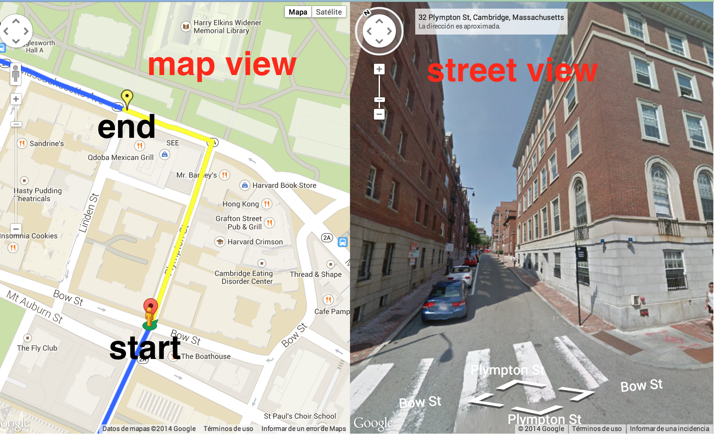
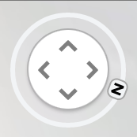
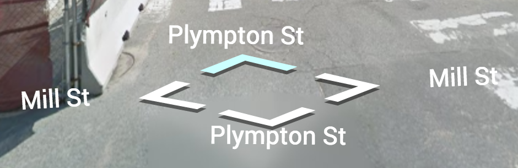

Instructions
At a glance
Your job is to check the accessibility along a section of a route by reporting any pedestrian obstacles that might occur along the way.
Setup
On the left map pane, you will be presented with a Google Maps route, highlighted in blue, from Route Marker A to B. The section you will be checking is highlighted in yellow, and starts at the red start marker and goes until the yellow end marker.
On the right streetview pane, you will see the street view of a given location on the route. You can tell where you are along the route based on the small person pin that shows up on the left map pane.
Orient
Face the direction of the end of the route, or the yellow marker, by using the compass in the top left corner of the streetview pane or by dragging across the streetview screen.

Report obstacles
Now spin around along the route so you can see the sidewalks located on the sides of the route that a pedestrian would take if they were to walk along the route.
Check each of the sidewalks to see if there are any obstacles that appear on either sidewalk. Obstacles include any of the following:
Stairs
Construction

Surface problem
Missing sidewalk
If you see an obstacle at the current location along either the left or right sidewalk, report that obstacle using the dropdown on the right side of the screen. Select the type of obstacle you have located or fill in a description using the "other" option. If the obstacle continues past an intersection, report the obstacle again after you have crossed that intersection.

Navigate along the road
Once you have reported the obstacles you see on both the left and right sidewalks along this road, continue along the road towards the yellow end marker. You can move by using the arrows on the streetview image, your arrow keys, or clicking forward on the streetview image.

Complete task
When you have reached the yellow marker, click "complete task" and copy and paste the text string back to Amazon Mechanical Turk.